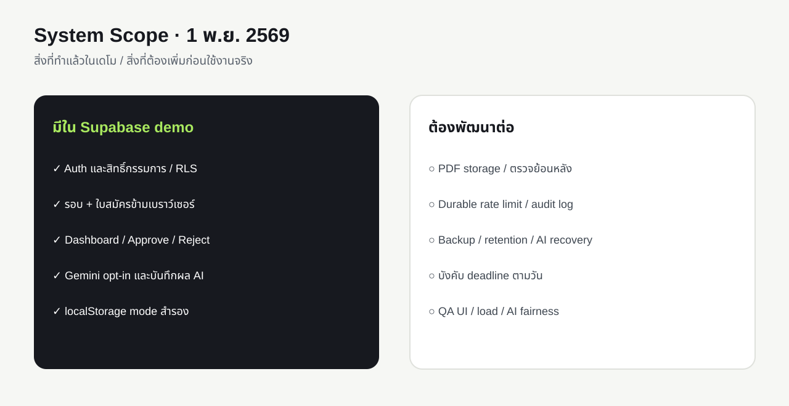
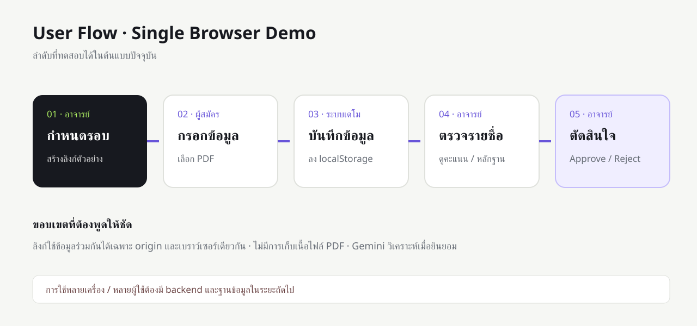
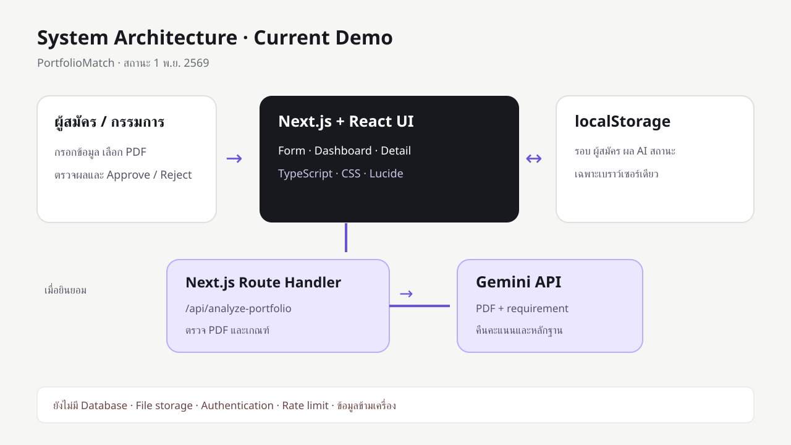
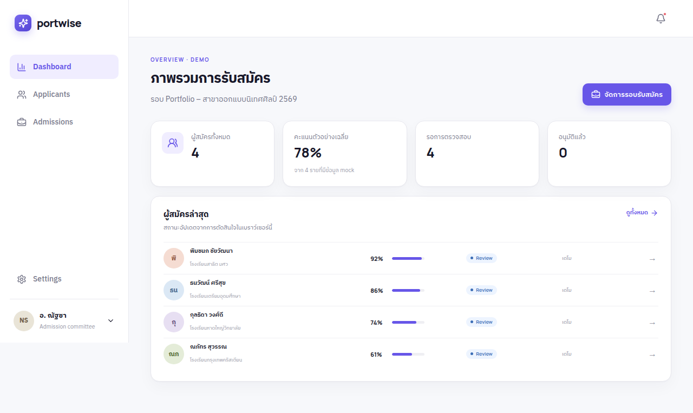
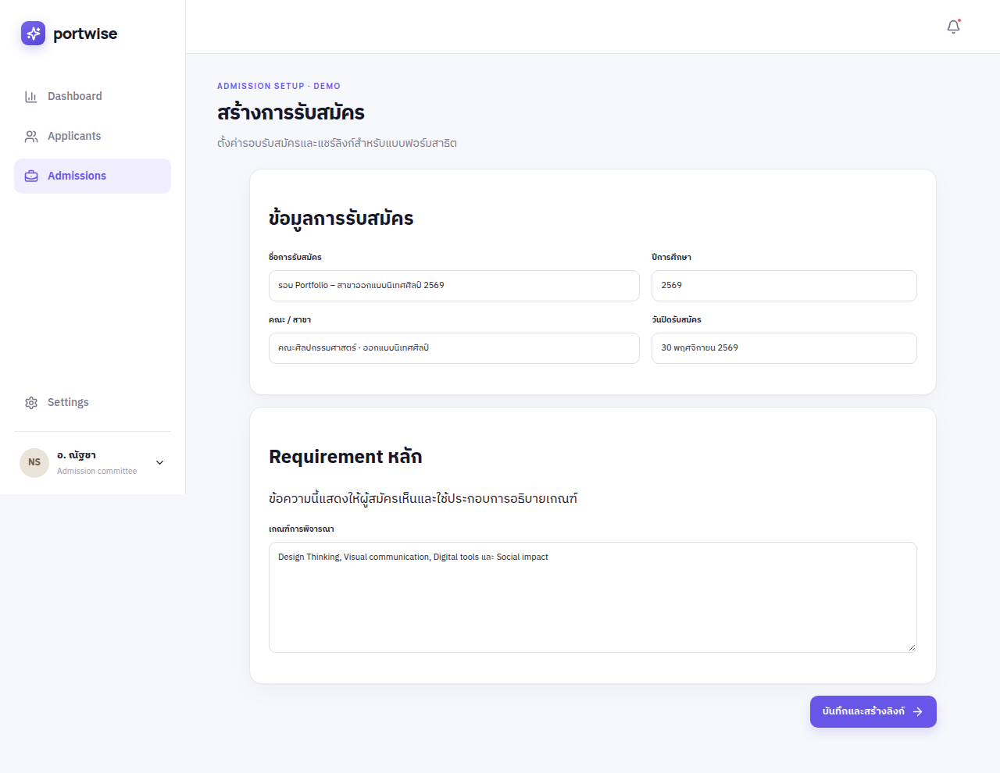
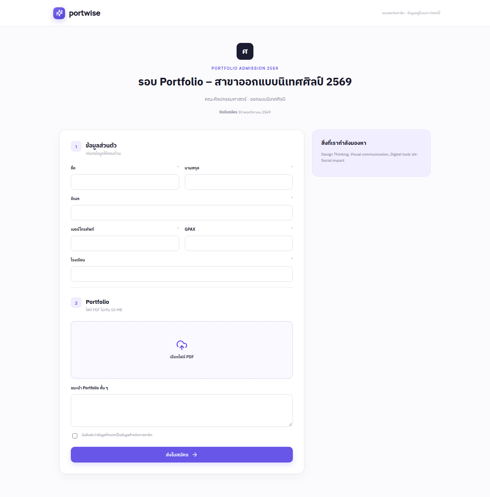
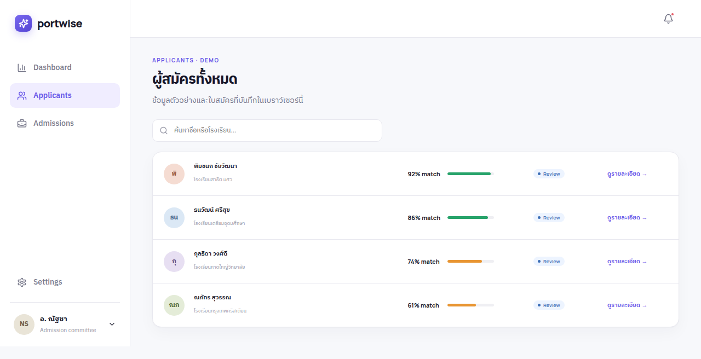
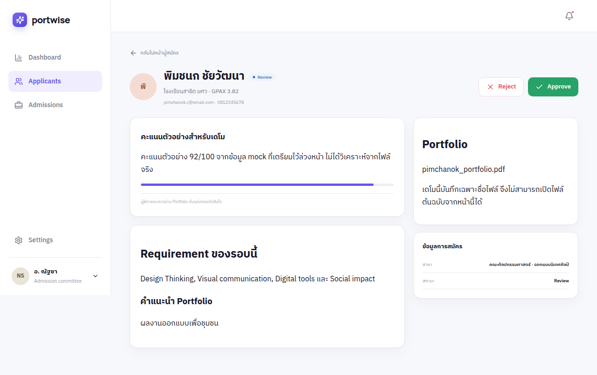

อาจารย์ / กรรมการรับสมัคร
เข้าสู่ระบบด้วยบัญชีที่ได้รับสิทธิ์ สร้างรอบ ดูใบสมัครและผล AI แล้วตัดสินด้วยตนเอง
REPORT & PRESENTATION KIT · อัปเดต Supabase 1 พ.ย. 2569
เรียงตาม 10 หัวข้ออาจารย์ พร้อมร่างเนื้อหาและแผนภาพใหม่หลังเชื่อม Supabase. ภาพหน้าจอ PNG เป็น UI mock เดิมจาก 31 ต.ค.
สถานะใหม่: มี Supabase demo mode สำหรับข้อมูลข้ามเบราว์เซอร์และสิทธิ์กรรมการ; ยังมี localStorage mode เดิม · Gemini วิเคราะห์เมื่อยินยอม · ไม่เก็บ PDF ต้นฉบับ · UI end-to-end หลัง Supabase รอ QA จากตง
PortfolioMatch: ต้นแบบระบบช่วยจัดการและคัดกรองใบสมัคร Portfolio เป็นชื่อที่สื่อถึงการเปรียบเทียบข้อมูลผู้สมัครกับเกณฑ์ของสาขา สำหรับรายงานภาษาอังกฤษใช้ PortfolioMatch: An Interactive Prototype for Portfolio Admission Screening.
นัท: ตรวจชื่อโครงการและชื่อสมาชิกตามหน้าปกรายงานจริงก่อนส่ง
การรับสมัครรอบ Portfolio มีข้อมูลส่วนตัว ผลงาน และเกณฑ์พิจารณาหลายส่วน กรรมการต้องเปิดเอกสารและเปรียบเทียบผู้สมัครด้วยตนเอง ทีมจึงออกแบบหน้าจอรวมข้อมูลและแสดงสถานะการพิจารณาในที่เดียว เพื่อลดขั้นตอนสลับเอกสารและช่วยให้การพิจารณาอ้างอิงเกณฑ์เดียวกัน
ต้นแบบมี Gemini วิเคราะห์ PDF ตามเกณฑ์เมื่อผู้สมัครยินยอม โดยกรรมการยังตัดสินใจเอง; endpoint ผ่านการทดสอบด้วย PDF จำลองแล้ว แต่ UI ผล AI ยังต้องทดสอบซ้ำ และยังไม่มีผลวัดว่าใช้เวลาน้อยลงหรือแม่นยำขึ้น
ผลทดสอบ API/DB ผ่านแล้ว; UI end-to-end หลัง Supabase รอ QA จากตง
เข้าสู่ระบบด้วยบัญชีที่ได้รับสิทธิ์ สร้างรอบ ดูใบสมัครและผล AI แล้วตัดสินด้วยตนเอง
เปิดลิงก์รอบสมัคร กรอกข้อมูล เลือก PDF และเลือกว่าจะให้ AI วิเคราะห์หรือไม่ โดยระบบยังไม่เก็บไฟล์ต้นฉบับ

บัญชีกรรมการและสิทธิ์, PostgreSQL/RLS, รอบรับสมัคร, ใบสมัครข้ามเบราว์เซอร์, Dashboard, Approve/Reject และ Gemini แบบยินยอม
เก็บ PDF ต้นฉบับ, durable rate limit, audit/retention, AI recovery, การทดสอบโหลด และการประเมินผลกับผู้ใช้จริง
โหมด localStorage เดิมยังใช้ได้เมื่อไม่ตั้งค่า Supabase แต่ไม่ใช่ผลการทดสอบ DB
แหล่งอ้างอิงต่อไปนี้ใช้เป็นพื้นฐานด้านความเสี่ยง AI, บทบาทมนุษย์ และการออกแบบฟอร์ม ไม่ใช่หลักฐานว่า PortfolioMatch มีประสิทธิภาพสูงขึ้นแล้ว
นัท: จัดรูปแบบบรรณานุกรมตามรูปแบบที่อาจารย์กำหนด และเพิ่มงานวิจัยเฉพาะด้านการคัดกรอง Portfolio หากหาแหล่งที่ตรวจสอบได้
Next.js App Router, React, TypeScript และ CSS เป็น UI. โหมด Supabase ใช้ Auth ให้กรรมการล็อกอิน, PostgreSQL พร้อม RLS เก็บรอบ/ใบสมัคร/ผล AI และ Next.js Route Handler เปิดข้อมูลรอบ รับใบสมัคร และเรียก Gemini เมื่อผู้สมัครยินยอม. PDF ถูกส่งชั่วคราวและไม่ถูกเก็บ. หากไม่ตั้งค่า Supabase ระบบใช้ localStorage mode เดิม.


แผนภาพนี้อธิบายโค้ดปัจจุบัน; ภาพ PNG ด้านล่างยังเป็น mock จาก 31 ต.ค.
ระบบมี Dashboard, Applicants, Detail, Create, Application Form, Submission Success และ Privacy. โหมด Supabase บันทึกรอบ ใบสมัคร สถานะ และผล AI ข้ามเบราว์เซอร์. ภาพหน้าจอชุดนี้ถ่ายก่อน Supabase ด้วยข้อมูล mock; คะแนนผู้สมัครตัวอย่าง 92, 86, 74, 61 ไม่ใช่ผล Gemini.
ทีม 3 คน: กานต์ดู flow/integration, ตงดู Frontend QA/demo, นัทดูรายงานและสไลด์. เครื่องมือมี Next.js, React, TypeScript, CSS, Lucide, Supabase และ Gemini API. นัทต้องเติมชั่วโมง อุปกรณ์ ค่าใช้บริการจริง และต้นทุน–ประโยชน์ก่อนส่ง; ยังไม่มีตัวเลขที่ยืนยัน.





ภาพ PNG ไม่ใช่หลักฐานการทดสอบ Supabase/Gemini UI. รอภาพ QA ใหม่จากตง
กานต์ทดสอบกับ Supabase จริงในเครื่อง; ผล QA ผ่านเบราว์เซอร์หลังเชื่อม DB ยังต้องให้ตงเก็บหลักฐาน. รายละเอียดและสิ่งที่ต้องใส่ในรายงานอยู่ใน บันทึกอัปเดตล่าสุด.
| กรณี | สถานะ | หลักฐาน/ข้อจำกัด |
|---|---|---|
| Typecheck / Build | ผ่าน | npm run typecheck และ npm run build |
| Supabase migration / RLS | ผ่านระดับ DB | สอง migration; กรรมการอ่าน/เปลี่ยนสถานะได้, บัญชีอื่นเห็น 0 รายการ |
| ส่งใบสมัคร 2 แบบ | ผ่านระดับ API/DB | ไม่ยินยอม AI ไม่มีคะแนน; ยินยอม AI บันทึกผล Gemini สำเร็จ |
| Token ผิด / รอบไม่พบ | ผ่านระดับ API | HTTP 403 / 404 |
| Login, Create, Submit, Approve/Reject ผ่าน UI ข้ามเบราว์เซอร์ | รอ QA ตง | ต้องเก็บ screenshot, browser/version, viewport, Pass/Fail |
อย่าใช้ภาพ mock เดิมรับรองผล DB/AI UI; อย่าเปลี่ยน “รอ QA” เป็น Pass ก่อนมีหลักฐาน
PortfolioMatch มีเดโมฐานข้อมูล Supabase ที่บันทึกรอบ/ใบสมัครข้ามเบราว์เซอร์และใช้ Gemini ช่วยสรุปเมื่อยินยอม โดยกรรมการยังตัดสินเอง. ผล API/DB ผ่านกรณีที่ระบุ; UI end-to-end ยังรอ QA. ยังไม่มีผลวัดว่าลดเวลา เพิ่มความถูกต้อง หรือความเป็นธรรม.
ก่อนใช้งานจริงต้องเพิ่ม PDF storage, durable rate limit, audit/retention, AI recovery, การทดสอบโหลดและคุณภาพ AI. วันปิดรอบยังเป็นข้อความแสดงผล. ระบบยังไม่พร้อมรับข้อมูลผู้สมัครจริง.
ดาวน์โหลดภาพแยกหรือรับทั้งหมดเป็น ZIP แล้วใส่คำบรรยายภาพและแหล่งที่มาตามรูปแบบรายงาน